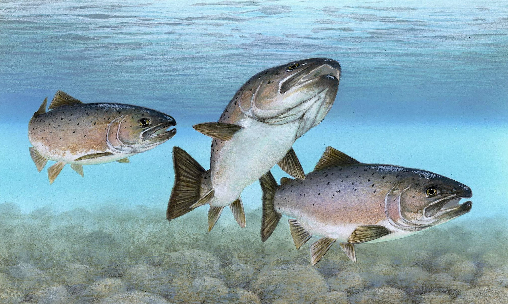
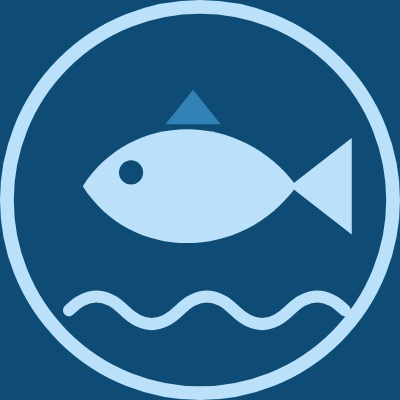
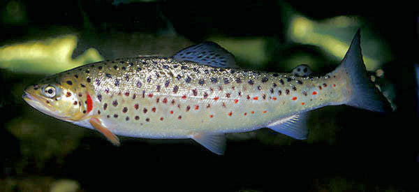
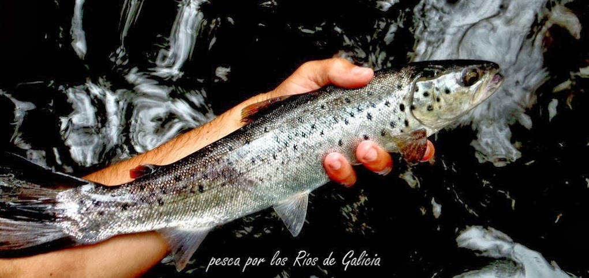
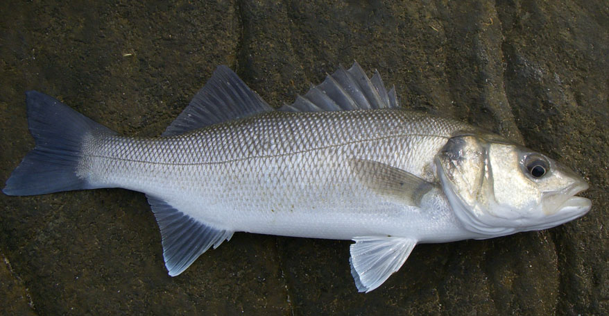

Salmón atlántico
Símbolo de los ríos asturianos. Nace en el río, vive en el mar y vuelve a su río para reproducirse.

Asociación de pesca deportiva en Asturias

La pesca es el oficio o arte de capturar peces, tanto en aguas continentales como en el mar. Es una de las actividades más antiguas de la humanidad: se practica desde el Paleolítico Superior, hace unos 40.000 años.
Hoy en día millones de personas viven de ella, y muchas otras la practican por afición.

La pesca deportiva se practica por ocio o en competición, de forma individual o en equipo. Puede hacerse en ríos, embalses y lagunas (pesca continental) o desde espigones, playas y embarcaciones (pesca marítima).
Las federaciones regulan los aparejos, el cupo de capturas y el tamaño de cada especie, y organizan concursos y campeonatos a todos los niveles.

Asturias tiene más de 345 kilómetros de costa, además de ríos y rías, y un clima templado y húmedo todo el año, ideal para la pesca deportiva.
Recuerda tener la licencia y conocer las especies, tallas y cantidades permitidas.

Símbolo de los ríos asturianos. Nace en el río, vive en el mar y vuelve a su río para reproducirse.

Vive en ríos de aguas frías y limpias. Es la pieza más habitual de la pesca fluvial.

Trucha que pasa parte de su vida en el mar y sube a los ríos a desovar.

Pez de la costa muy buscado desde rocas y playas, sobre todo con señuelos.